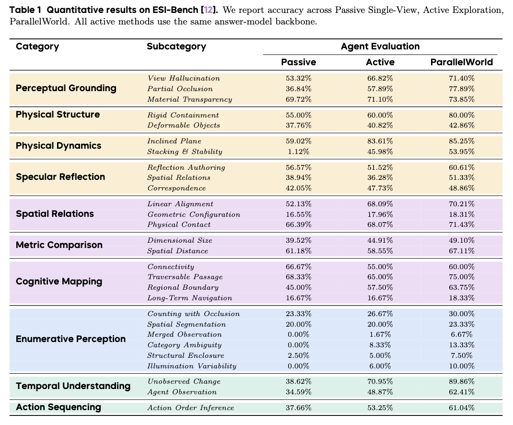
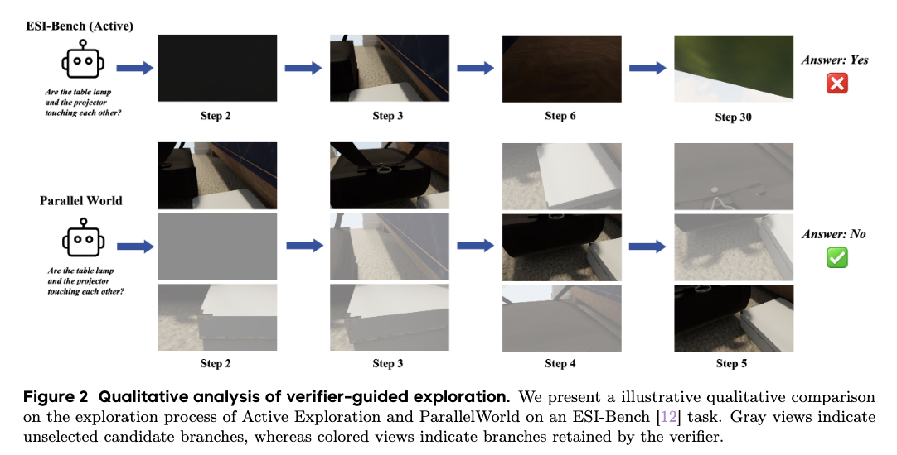

Expand
Enumerate camera and task actions from every retained world and render their prospective outcomes.
Active embodied reasoning · test-time scaling
Prospective world simulation for deliberate embodied exploration.
1Tsinghua University, 2National University of Singapore,
Embodied reasoning constitutes a fundamental capability of embodied intelligence, serving as the basis for autonomous perception, reasoning, and interaction within physical environments. Recent studies have shifted the paradigm of embodied reasoning from static perception toward dynamic exploration, where agents acquire task-relevant information through interactions with the environment. However, existing active reasoning approaches generally generate exploration trajectories incrementally without long-horizon planning. Even recently emerged test-time scaling frameworks often resort to myopic, single-step lookaheads, which struggle to resolve the delayed feedback inherent in complex, occluded spatial environments. To address this limitation, we propose ParallelWorld, a multi-horizon test-time scaling framework for embodied reasoning. Instead of greedy, single-step trials, ParallelWorld empowers agents to simulate and evaluate multi-step future trajectories in parallel before committing to an action. Specifically, we introduce a verifier-guided tree-search paradigm. Starting from the current state, ParallelWorld branches into multiple parallel trajectories and rolls them out continuously across a multi-step horizon. At each simulation step, a verifier agent evaluates the intermediate state transitions, dynamically pruning unpromising branches and prioritizing paths with the most task-relevant evidence. Once the multi-step prospective simulation is complete, the agent synthesizes the long-horizon outcomes to commit to the optimal action sequence. Finally, an answer agent performs reasoning over the selected trajectory to produce the final reasoning. Extensive experiments on ESI-Bench demonstrate that ParallelWorld consistently improves active perception and reasoning performance.

Enumerate camera and task actions from every retained world and render their prospective outcomes.
Rank candidate branches by task-relevant visibility, ambiguity reduction, and complementary evidence.
Reconstruct the highest-ranked root-to-leaf route and reason over its physically consistent observations.
On ESI-Bench, ParallelWorld improves over sequential Active Exploration across all 28 evaluated subcategories.

The sequential active exploration baseline follows a single trajectory whose observations remain ambiguous and eventually predicts an incorrect answer. In contrast, ParallelWorld evaluates multiple candidate actions in simulated future worlds, as illustrated by the stacked views at each step. The verifier selects trajectories that progressively expose the relative positions of the lamp and projector. The selected evidence clearly indicates that the gap of the two objects, enabling the answer agent to produce the correct prediction. This example demonstrates how prospective simulation and verifier-guided selection improve evidence acquisition over single-trajectory exploration.

@inproceedings{parallelworld2026,
title = {ParallelWorld: Test-Time Scaling for Embodied Reasoning},
author = {Chen, Min and Zhang, Shengjun and Li, Yuxin and Zhang, Zhang and Fei, Xin and Xia, Chong and Duan, Yueqi},
booktitle = {arXiv},
year = {2026}
}